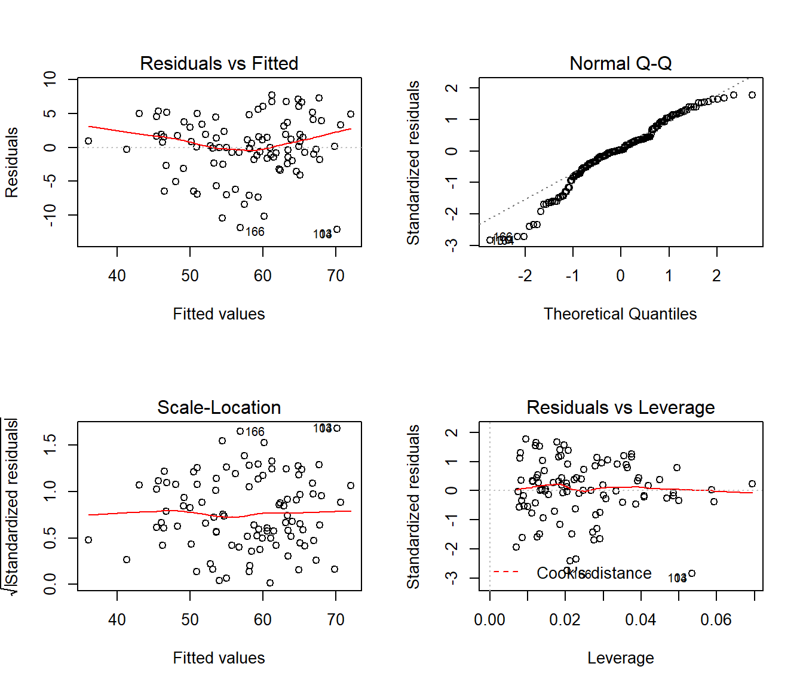

6.4 Análisis e interpretación del modelo
Al margen de la colinealidad, si no se verifican las otras hipótesis estructurales del modelo (Sección 6.1), las conclusiones obtenidas pueden no ser fiables, o incluso totalmente erróneas:
La falta de linealidad “invalida” las conclusiones obtenidas (cuidado con las extrapolaciones).
La falta de normalidad tiene poca influencia si el número de datos es suficientemente grande (TCL). En caso contrario la estimación de la varianza, los intervalos de confianza y los contrastes podrían verse afectados.
Si no hay igualdad de varianzas los estimadores de los parámetros no son eficientes pero sí insesgados. Las varianzas, los intervalos de confianza y contrastes podrían verse afectados.
La dependencia entre observaciones puede tener un efecto mucho más grave.
Con la función plot se pueden generar gráficos de interés para la diagnosis del modelo:
oldpar <- par(mfrow = c(2,2))
plot(modelo)
par(oldpar)Por defecto se muestran cuatro gráficos (ver help(plot.lm) para más detalles).
El primero (residuos frente a predicciones) permite detectar falta de
linealidad o heterocedasticidad (o el efecto de un factor omitido: mala
especificación del modelo), lo ideal sería no observar ningún patrón.
El segundo gráfico (gráfico QQ), permite diagnosticar la normalidad, los puntos del deberían estar cerca de la diagonal.
El tercer gráfico de dispersión-nivel permite detectar heterocedasticidad (la pendiente debería ser nula) y ayudar a seleccionar una transformación para corregirla (también se podría emplear la función boxcox() del paquete MASS).
El último gráfico permite detectar valores atípicos o influyentes. Representa los residuos estandarizados en función del valor de influencia (a priori) o leverage (\(hii\) que depende de los valores de las variables explicativas, debería ser \(< 2(p+1)/2\)) y señala las observaciones atípicas (residuos fuera de [-2,2]) e influyentes a posteriori (estadístico de Cook >0.5 y >1).
Si las conclusiones obtenidas dependen en gran medida de una
observación (normalmente atípica), esta se denomina influyente (a
posteriori) y debe ser examinada con cuidado por el experimentador.
Se puede volver a ajustar el modelo eliminando las observaciones influyentes26,
pero puede ser recomendable emplear regresión lineal robusta,
por ejemplo mediante la función rlm() del paquete MASS.
En regresión lineal múltiple, en lugar de generar gráficos de dispersión simple (p.e. gráficos de dispersión matriciales) para analizar los efectos de las variables explicativas y detectar posibles problemas (falta de linealidad…), se pueden generar gráficos parciales de residuos, por ejemplo con el comando:
termplot(modelo, partial.resid = TRUE)Aunque puede ser preferible emplear las funciones crPlots ó avPlots del paquete car:
library(car)
crPlots(modelo)
# avPlots(modelo)Estas funciones permitirían además detectar puntos atípicos o influyentes
(mediante los argumentos id.method e id.n).
Para obtener medidas de diagnosis o resúmenes numéricos de interés se pueden emplear
las siguientes funciones (ver help(influence.measures) para un listado más completo):
| Función | Descripción |
|---|---|
| rstandard | residuos estandarizados (también eliminados) |
| rstudent | residuos estudentizados |
| cooks.distance | valores del estadístico de Cook |
| influence | valores de influencia, cambios en coeficientes y varianza residual al eliminar cada dato (LOOCV). |
Hay muchas herramientas adicionales disponibles en otros paquetes.
Por ejemplo, como ya se comentó, se puede emplear la función
vif() del paquete car para calcular los factores de inflación de varianza,
aunque puede ser preferible emplear otras medidas como el índice de condicionamiento,
implementado en el paquete mctest.
La librería lmtest proporciona herramientas adicionales para la diagnosis de modelos lineales,
por ejemplo el test de Breusch-Pagan (para contrastar homocedasticidad) en la función bptest()
o el de Durbin-Watson (para detectar si hay correlación en serie) en dwtest().
Posibles soluciones cuando no se satisfacen los supuestos básicos:
Como ya se comentó, pueden llevarse a cabo transformaciones de los datos para tratar de corregir la falta de linealidad, heterocedasticidad y/o normalidad (normalmente estas últimas “suelen ocurrir en la misma escala”). Otra alternativa sería tratar de emplear modelos lineales generalizados.
Si no se logra corregir la heterocedasticidad puede ser adecuado utilizar mínimos cuadrados ponderados (habría que modelar la varianza).
Si hay dependencia se puede tratar de modelarla y utilizar mínimos cuadrados generalizados.
Si no se logra corregir la falta de linealidad se puede pensar en utilizar modelos más flexibles (capítulo siguiente y anteriores).
Normalmente se sigue un proceso iterativo, eliminando la más influyente cada vez, por ejemplo con
which.max(cooks.distance(modelo))yupdate().↩︎